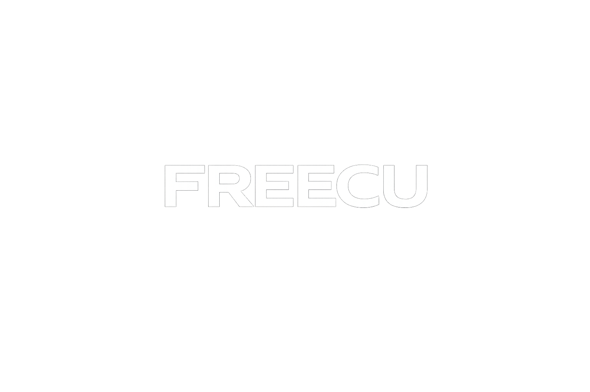
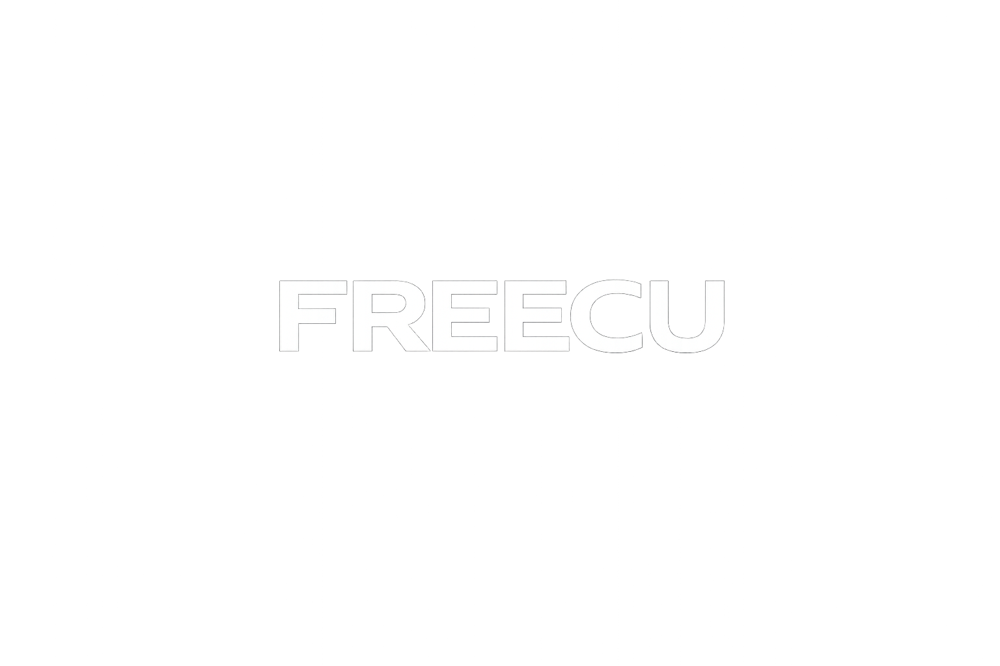
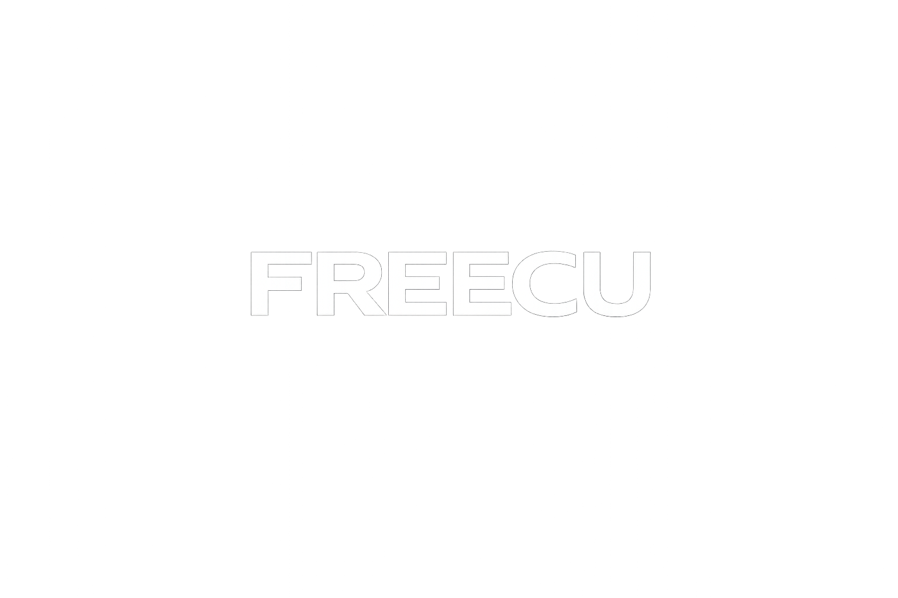
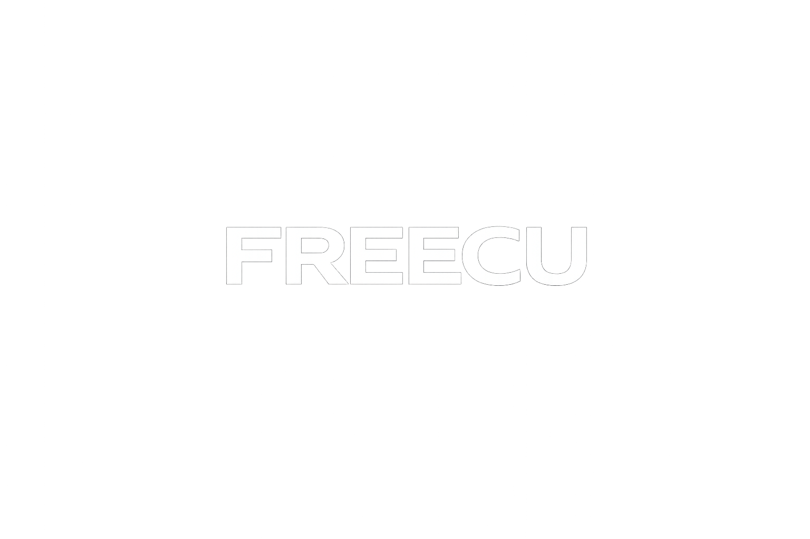

An experimental gaming-related crypto project.
Built in public. No promises.
FREECU is an early-stage experiment exploring the intersection between simple web games and crypto culture.
The project focuses on transparency, learning in public, and iterating step by step based on real feedback. There are no financial promises.
A simple runner-style game built as an early prototype. The goal is to test ideas, not to offer rewards.